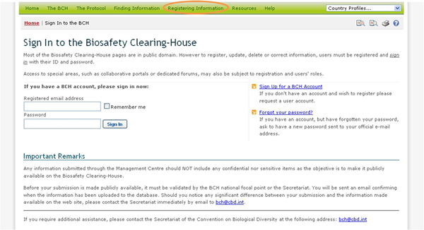

URL: https://bch.cbd.int/member/signin.shtml
El Centro de Gestión del CIISB proporciona un mecanismo web para ingresar, actualizar, borrar o corregir información en las bases de datos del CIISB. La información relacionada a la implementación nacional del Protocolo sólo puede ser ingresada por Puntos Focales Nacionales del CIISB. Las siguientes categorías de registros nacionales pueden ser registrados:
-
Base de datos Nacional de Bioseguridad
-
Autoridades Nacionales Competentes (Artículo 19.2)
-
Leyes de Bioseguridad, regulaciones, Guías y Acuerdos Regionales e Internacionales
-
Decisiones de País y otras comunicaciones
-
Evaluación de riesgo generada por un proceso regulatorio
-
Expertos en Bioseguridad (Decisiones BS-I/4 and BS-IV/4)
-
Informe de la Asignación del Experto en Bioseguridad
Otras categorías de información, es decir los registros de referencia, puede ser enviada por cualquier usuario registrado del CIISB, Estos registros deben ser validados por la SCDB antes de su publicación.
-
Detalles de Contacto
-
Actividades de Creación de Capacidad, Proyectos y Oportunidades
-
Organizaciones de Bioseguridad
-
Centro de Recursos de Información sobre Bioseguridad (CRIB)
-
Las Noticias del CIISB
-
Evaluación General de Riesgo generada por un proceso independiente o no regulatorio
-
Organismos Vivos Modificados (OVM)
-
Genes y secuencia de ADN
-
Organismos
La Secretaría se reserva el derecho de revisar y verificar, antes de su publicación, los registros de referencia suministrados por los usuarios registrados en el CIISB. Sus contribuciones a las Bases de Datos de Bibliografía Científica están sujetas a la validación por el Centro Internacional de Ingeniería Genética y de Biotecnología (CIIGB).
En el Módulo MO06 se puede encontrar instrucciones detalladas para el uso del Centro de Gestión.

 Vea también
Vea también
MO06 Registro de Información en Portal Central del CIISB
Registro de Información en el Portal Central del CIISB